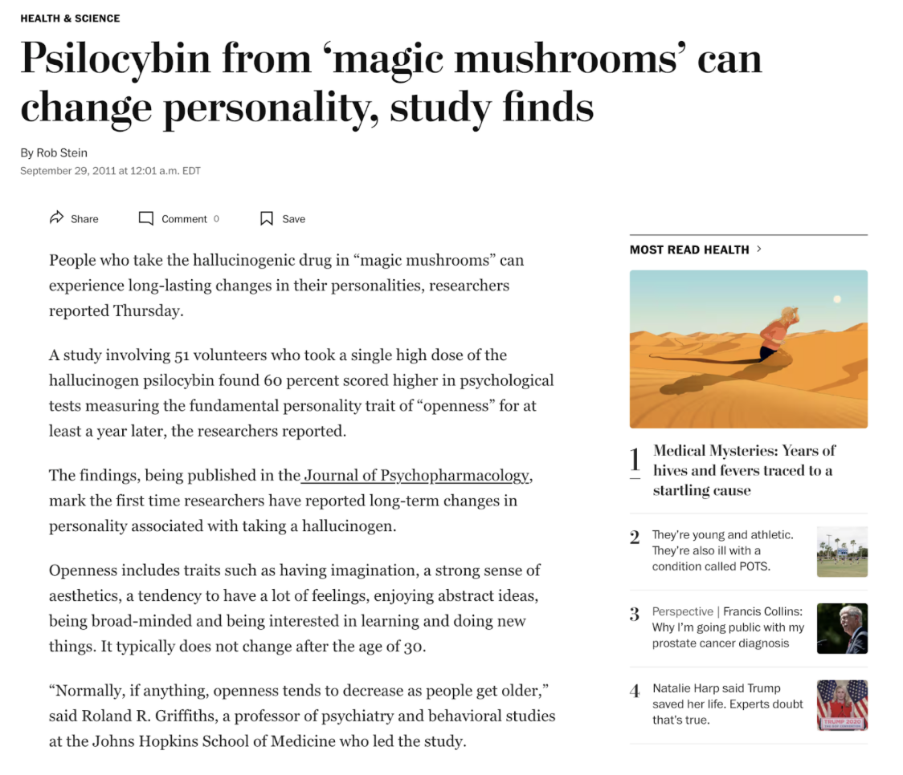
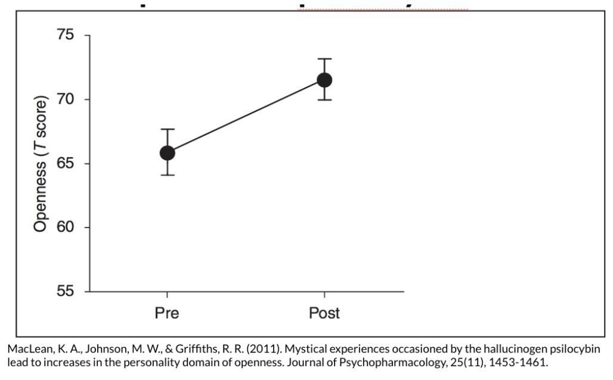
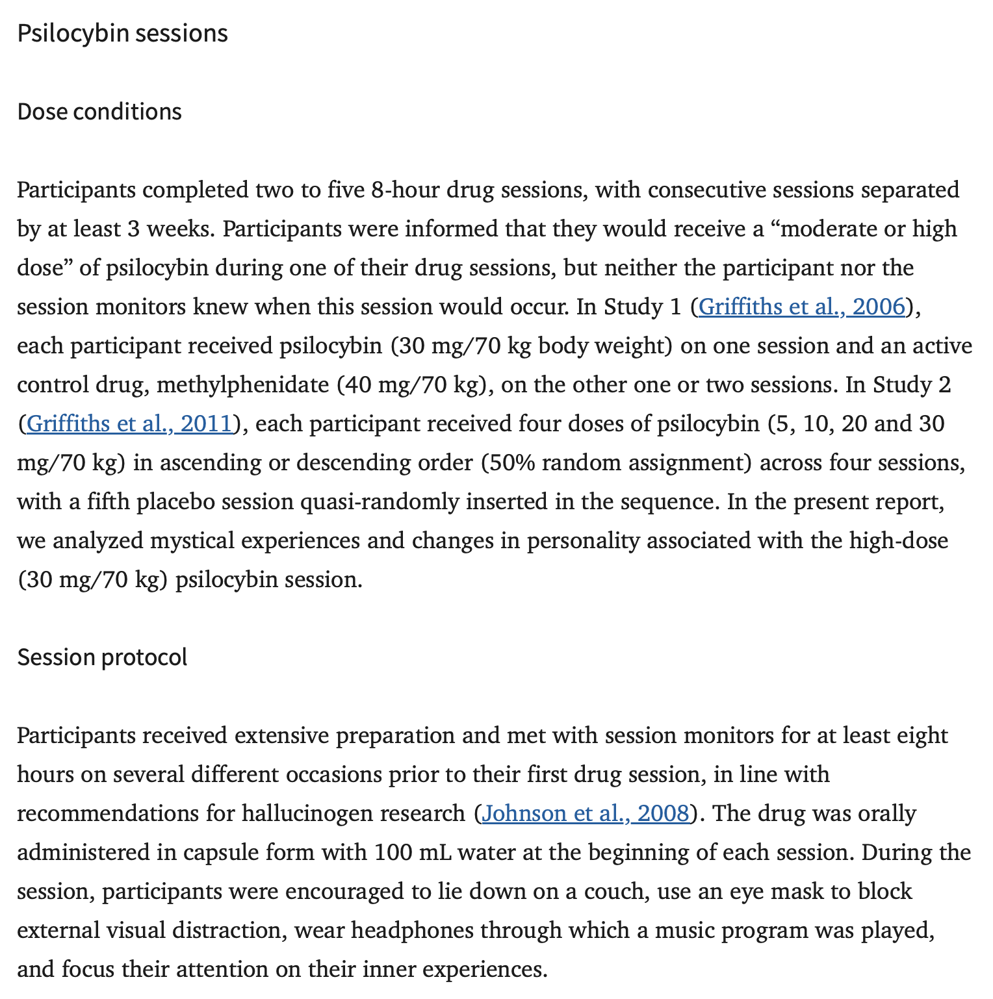
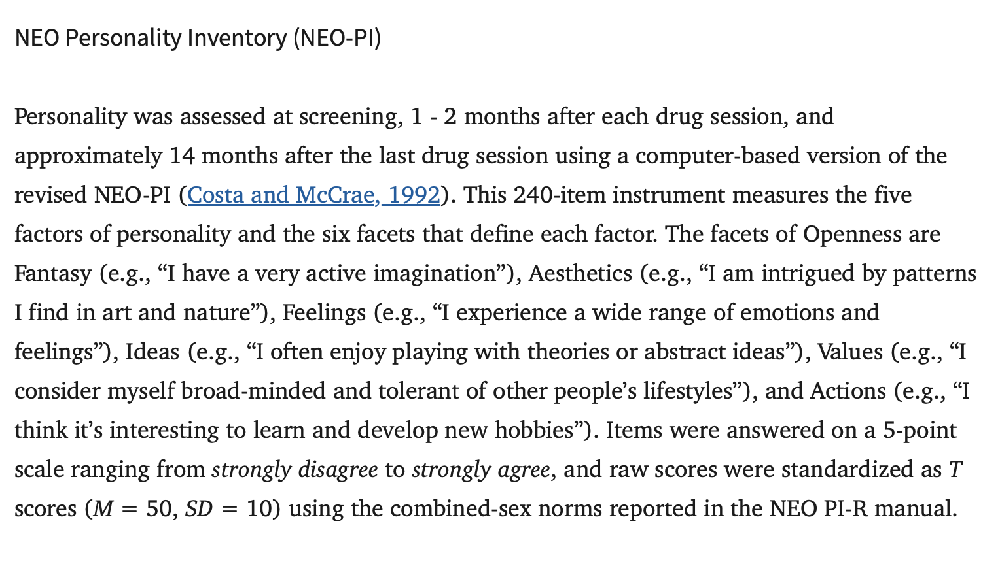
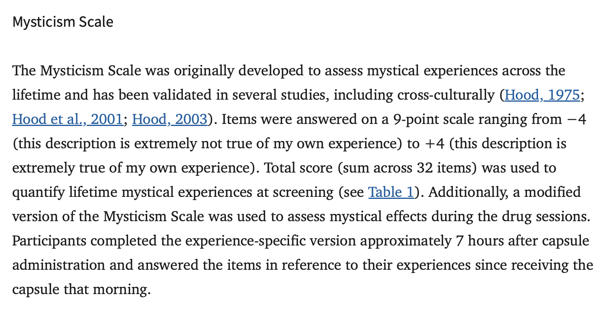
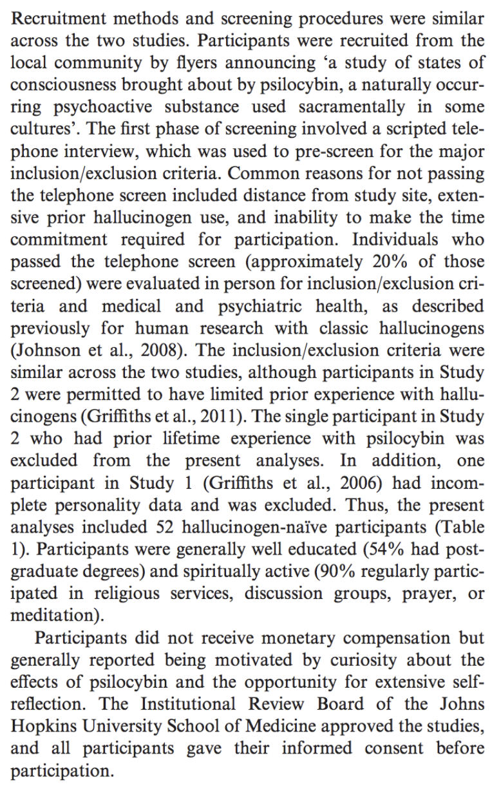
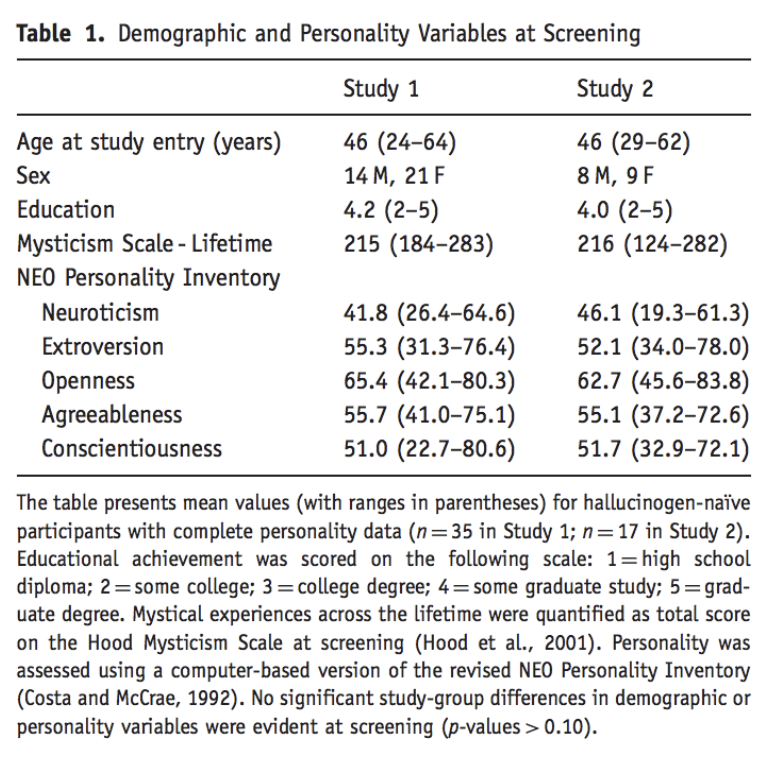
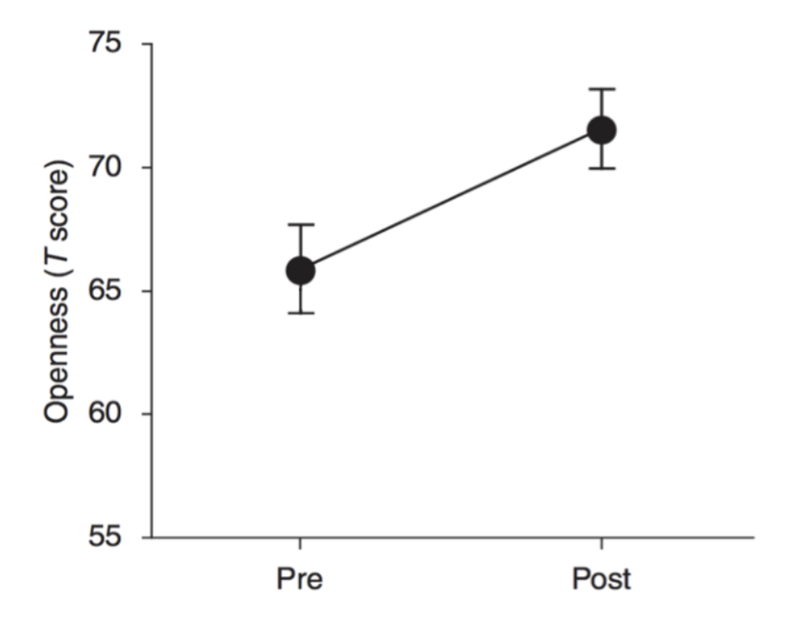
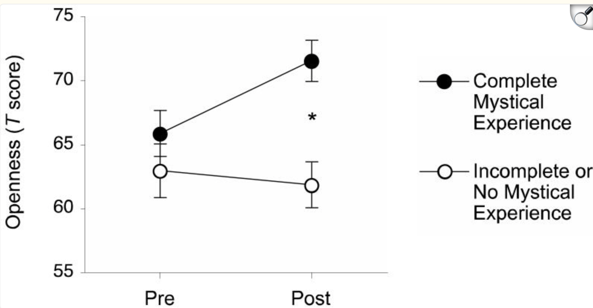

Check-In


Mushroom Science : The Manipulation
 |
|
Mushroom Science : The Measure
  |
|
Mushroom Science : The Sample
 |
 |
The Effect Depends…
On the Vision Board :
have you ever had a mystical / transcendental experience (drug or non-drug)?
what is some other factor (about people or the situation) that would change the relationship between taking the drug and openness to new experiences?

The Effect Depends…

Other Things To Chat About?
the article?
sampling bias / sampling error?
life, the universe, and everything?
Part 2 : Dig Deeper Assignment
Professor Reviews the RESEARCH METHODS VISION BOARD.
- Population : everyone in the world or smaller / more focused?
- WEIRD Sample :
- Western?
- Educated?
- Industrialized?
- Rich?
- Democratic?
Writing Dig Deeper
Final Product : write a short summary compare / contrasting the news article and the research article.
include at least one thing on the rubric from each category.
THE POINT / THE EVIDENCE / WHO CARES
Professor demonstrates and then you write.
NEXT WEEK : Final Project Time
Submit Dig Deeper [DONE]
Maybe read an article to discuss? [OR NAH]